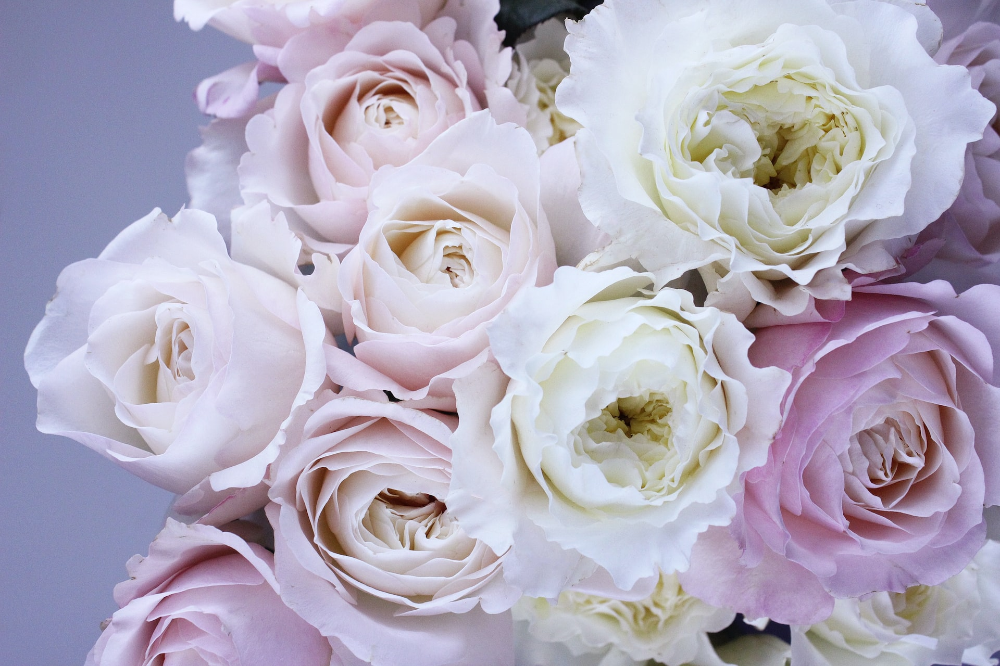
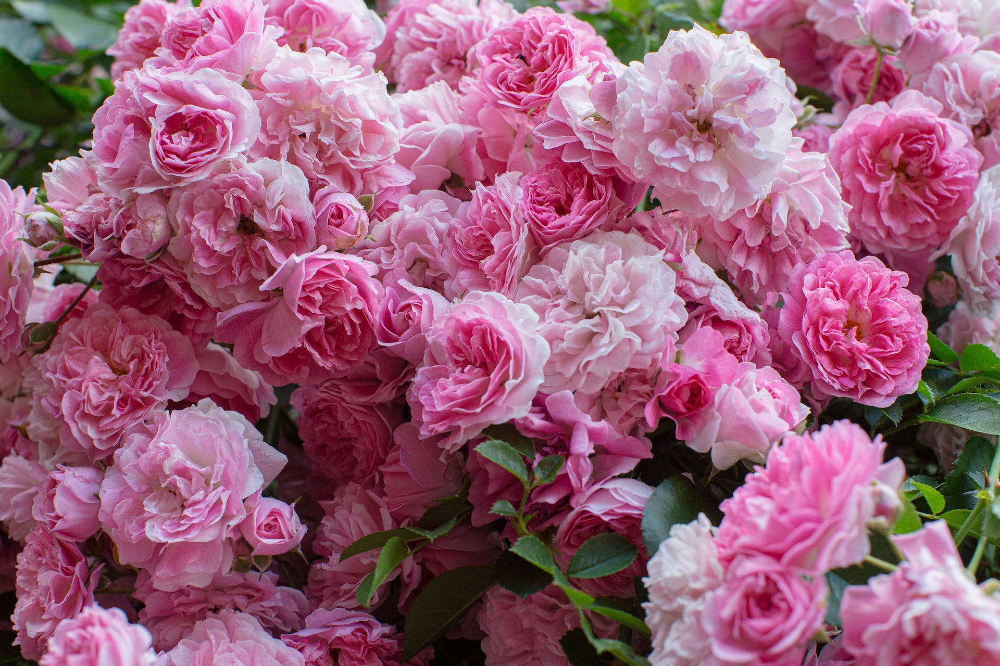

Our services can provide you with aid in the decoration of a romantic dinner and
provision of flowers of your choosing.
Carnations are excellent graduation flowers, and the different colors of carnation have their own meanings.
Red carnations are perfect to demonstrate your admiration for the graduate.
White carnation signifies your pure love for the graduate.
Pink carnation shows that you will not fail to remember the graduate.
